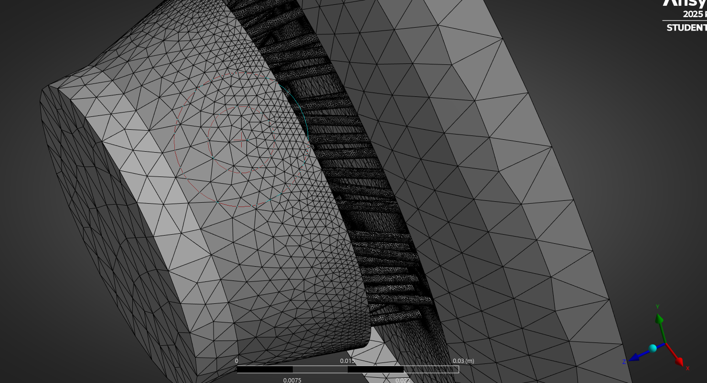
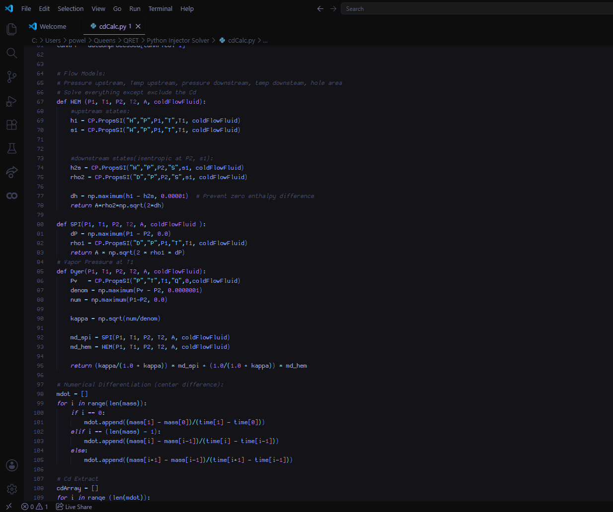

December 2025
Hybrid Rocket Injector
Propulsion design, CAD, injector sizing, ANSYS Fluent, Python simulation, and manufacturing planning for a hybrid rocket motor.

Overview
What this project was about.
This solo project focused on the design and analysis of a hybrid rocket nitrous oxide injector for Queen’s Rocket Engineering Team (QRET). The goal was to develop an injector geometry that could meet mass flow requirements and produce turbulence through a swirling motion to increase the fuel's regression rate, while remaining manufacturable and compatible with the rest of the rocket motor.
This project involved CAD design, 2-phase flow calculations, manufacturing consideration, testing, and simulation within ANSYS and Python. The final design features 60x1/16" injection holes which are drilled at an angle to impart the swirling motion onto the oxidizer, and is made to interface with the injector bulkhead designed by Aslan Lauzon.
Process
Design process.
Define requirements
Mass flow target, pressure conditions, and geometry constraints were set.
Size geometry
Hole count, diameter, flow area, and pressure drop were estimated using first pass calculations.
Design for manufacturing
CAD geometry was refined based on drill sizes, plate thickness, tolerances, and assembly needs.
Analyze and iterate
Simulation and testing was done to validate and improve the injector design.
Images / CAD / Analysis
Project visuals.


Technical Work
Things I worked on to complete this project.
Swirl Calculations
The angles of the injection orifices were carefully tuned to produce a swirl number greater than 0.6 within the rocket's combustion chamber. The effect of this is the formation of a recirculation zone within the fuel grain, which improves mixing and combustion stability. In addition the spray cone half angle was made to collide with the inside of the fuel grain.
ANSYS Fluent Simulation
Due to the limited student license I was working with, I could only run single phase ANSYS Fluent simulation with just under 1 million cells. Due to my limited cell count I had to carefully choose regions of the mesh to refine. I applied inflation layers along the orifice walls to account for boundary layer drag effects. This simulation was used to extract a single phase (purely geometric) discharge coefficient.
Custom Python Simulation
This single phase discharge coefficient was then used in a custom built Python simulation to produce an estimated mass flow rate. The simulation used the dyer two phase fluid flow model, as well as Pythons COOLPROP and Matplotlib libraries. The amount of injector orifices needed were then determined to obtain the goal mass flow rate of 2.546kg/s of nitrous oxide.
CAD and manufacturability
A finalized CAD model was created within Solidworks and FEA was preformed to ensure the part could withstand the 250PSI pressure gradient. Engineering drawings with GD&T for the bolt holes were made within Fusion360 and sent to a machinist to be manufactured on a 5-axis CNC mill.
Tools
Skills and software.
Reflection
What I learned.
This project helped me connect theory, simulation, and manufacturing. A major lesson was that injector design is not just a calculation problem, and that the final geometry also depends on available tools, tolerances, testing constraints, and how the part fits into the larger system.
This project will fly on QRET's Persistance 3 hybrid rocket engine this summer at Launch Canada as part of our rocket Chimera, hopefully achieving an elevation of over 20,000 feet.